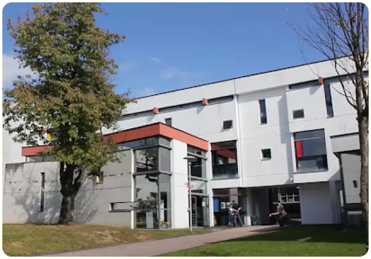
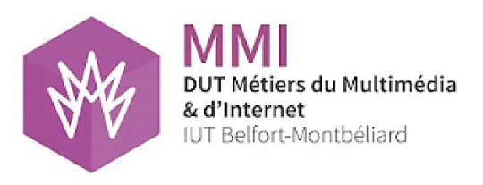

Qui suis-je ?
Je m’appelle Runser Aurélie, élève en 1ère année en BUT MMI à Montbéliard. Mon intérêt pour l’informatique et le web à commencer en 2nd, donc assez tard. En cours d’ICN, Informatique et Création Numérique. Nous avons appris à coder en HTML et CSS. C’est durant cette année que j’ai créé mon premier site internet. Cela m’avait beaucoup plus. J’ai continué l’informatique en choisissant Numérique et Science Informatique en 1ère et Terminal, et ma passion pour le codage n’a pas baissé. Le BUT MMI c’est donc imposé à moi, étant fan de codage de site web.
Le pourquoi de ce site
Ce site a été créer pour le 1er projet individuel de MMI, avec pour thème « Des Amazon à Balance Ton Porc : les visages du féminisme ». Le secteur militaire et la seconde guerre mondiale m’ont toujours intéressé sans que je ne trouve du temps à y consacré. J’ai donc joué d’une pierre deux coup ! et créa un site axé sur les femmes dans la Résistance. Ce projet m’a permis d’effectuer des recherches intéressantes, dont la majorité sont disponible dans le 1er article : Les Femmes fond de la Résistance.
Bien que ce site comporte 2 articles importants en lien avec la guerre, les militaires, des éléments sans lien avec ces thèmes peuvent être trouver, afin de ne pas être centré seulement sur un sujet. Des portraits de femmes de différents horizons sont répertoriés dans la Galerie disponible sur la page d’accueil afin d’étendre sa culture !
Contactez-moi !
Si vous avez des questions par rapport au site ou mes formations, n’hésitez pas à les poser avec la page Contact.